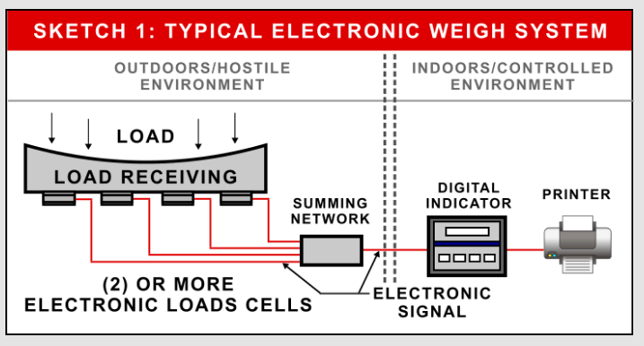
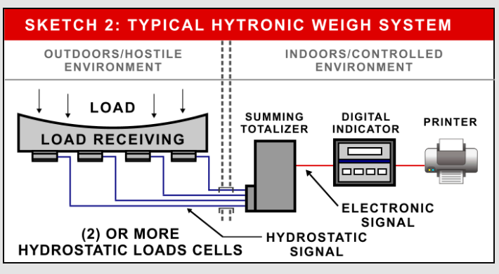
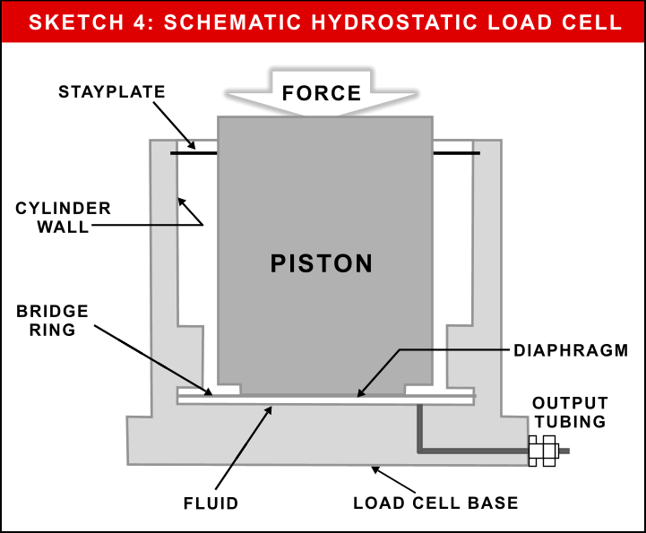
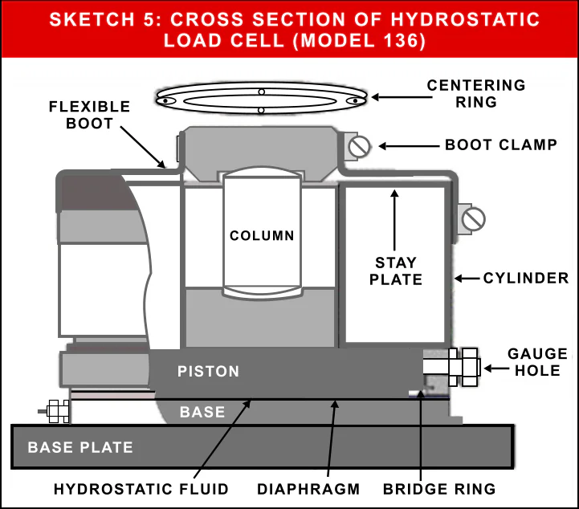
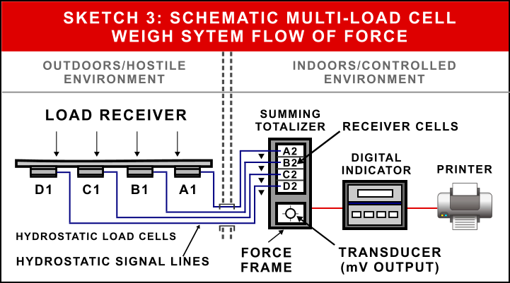

Emery Winslow Scale
Emery Winslow – Hydrostatic™ Technology
Bài chuyên sâu kỹ thuật về công nghệ cân thủy tĩnh độc quyền của Emery Winslow Scale Company: nguyên lý loadcell, công thức áp suất PSI, Summing Totalizer, khả năng chống nước, sét và nhiễu RFI/EMI, tuổi thọ, bảo hành — và những giới hạn mà chính nhà sản xuất thừa nhận. Nội dung được biên soạn và dịch thuật từ tài liệu chính thức của nhà sản xuất.

Giới thiệu Hydrostatic™ Technology
Hydrostatic™ Technology là công nghệ độc quyền của Emery Winslow Scale Company. Công nghệ này kết hợp thiết bị điện tử hiện đại với cảm biến tải Hydrostatic™ mà nhà sản xuất gọi là “gần như không thể phá hủy”, tạo thành một hệ thống cân không có linh kiện điện tử nào tại khu vực dễ bị tác động nhất — bàn cân. Các tín hiệu trọng lượng thủy tĩnh được bịt kín được truyền tới một khu vực sạch, được kiểm soát, tại đó chúng được cộng tổng và chuyển đổi thành một tín hiệu điện tử duy nhất, cấp cho đầu cân hiển thị số của hệ thống.
Nhà sản xuất mở đầu tài liệu của mình bằng một tuyên bố trực diện: nếu hoạt động của Quý khách phụ thuộc vào loadcell, hãy chọn hệ thống cân duy nhất cam kết rằng loadcell không bao giờ cần phải thay thế. Bài chuyên sâu này trình bày lại đầy đủ cơ sở kỹ thuật của tuyên bố đó — cùng với giới hạn của nó — đúng như tài liệu của Emery Winslow, để đội ngũ kỹ thuật tại các nhà máy thép, luyện kim, xi măng, hóa chất, cảng và logistics có thể đánh giá công nghệ trên đúng nguyên lý và số liệu của nhà sản xuất.
So sánh hệ thống cân điện tử truyền thống và hệ thống cân Hydrostatic™
Sơ đồ 1 và Sơ đồ 2 của nhà sản xuất là sơ đồ đơn giản hóa của một hệ thống cân nhiều loadcell điển hình: Sơ đồ 1 là hệ loadcell điện tử, Sơ đồ 2 là hệ loadcell Hydrostatic™.


Trên sơ đồ, hai hệ thống trông tương tự nhau. Khác biệt đáng kể nằm ở vị trí của mạng cộng tín hiệu. Trong một hệ thống cân Hydrostatic™ điển hình, mạng cộng tín hiệu — Summing Totalizer — được đặt trong một môi trường được bảo vệ, như phòng điều khiển hoặc nhà cân. Trong hệ thống điện tử, mạng cộng tín hiệu (summing board) nằm cùng với các loadcell điện tử, trong cùng môi trường mà phần tử nhận tải phải chịu đựng.
Trong một hệ thống cân điện tử, loadcell điện tử, cáp và bo cộng tín hiệu là những thành phần nhạy cảm với môi trường. Trong một hệ thống cân Hydrostatic™, loadcell và đường ống không nhạy cảm với môi trường. Linh kiện nhạy cảm với môi trường đầu tiên trong hệ thống Hydrostatic™ là transducer điện tử, một bộ phận của Summing Totalizer; vì Summing Totalizer được đặt xa phần tử nhận tải và xa môi trường khắc nghiệt, nó được bảo vệ khỏi hư hỏng và lỗi vận hành.
Tiền đề cơ bản của hệ thống loadcell Hydrostatic™ là cách ly mọi linh kiện nhạy cảm với môi trường vào một vị trí an toàn và thân thiện. Theo nhà sản xuất, khả năng vô hiệu hóa tác động của môi trường lên các linh kiện nhạy cảm đó là một lợi thế lớn của hệ thống.
Nguyên lý hoạt động của Hydrostatic Load Cell
Loadcell thủy tĩnh về cơ bản là một cơ cấu cơ khí đơn giản, vận hành theo các định luật vật lý đã biết. Nó gồm một piston, một đế (base), một xi lanh (cylinder) và một màng ngăn (diaphragm). Một lớp chất lỏng mỏng được kẹp giữa đế và màng ngăn, và piston ép lên màng ngăn. Lượng chất lỏng cần thiết rất ít — chưa tới 1 pint chất lỏng cho một cân xe tải dài 70 foot.
Mỗi loại loadcell thủy tĩnh được thiết kế với một “diện tích tác dụng” (acting area) chính xác — một giá trị đã biết, tính bằng inch vuông. Khi một trọng lượng đã biết tác dụng lên một loadcell thủy tĩnh có diện tích tác dụng đã biết, áp suất đầu ra tính bằng PSI có thể dự đoán được. Thiết kế giữ một quan hệ tuyến tính giữa tải trọng tác dụng và áp suất đầu ra, như công thức ở mục dưới đây cho thấy.
Một hệ thống cân thủy tĩnh có thể được định cỡ để đáp ứng đúng yêu cầu của ứng dụng. Summing Totalizer có khả năng đặc biệt là tối đa hóa cường độ tín hiệu milivôn dựa trên tổng tải của toàn hệ thống, chứ không dựa trên mức tải của từng loadcell riêng lẻ.
Cấu tạo: Piston, Base, Cylinder, Diaphragm và Hydrostatic Fluid

Sơ đồ 5 là loadcell Model 136 – 75.000 lb của Emery Winslow, dùng trong các ứng dụng cân xe tải. Loại loadcell thủy tĩnh này cũng được dùng trong cân bồn tải trọng lớn, cân sàn và các ứng dụng tùy chỉnh. Các chi tiết ghi trên bản vẽ gồm: lỗ đo (gauging holes), đế (base), xi lanh (cylinder), piston, tấm giữ (stay plate), gối đỡ cầu cân (weighbridge support), vòng cầu (bridge ring), chất lỏng (fluid) và màng ngăn (diaphragm).

Piston của loadcell chỉ chuyển động theo phương thẳng đứng; điều này đạt được nhờ một tấm giữ (stay plate) ở phía trên piston và một vòng cầu (bridge ring) ở phía dưới piston. Vị trí thẳng đứng của piston so với đế được đo qua các lỗ đo trên Sơ đồ 5: có 3 lỗ đo đặt cách nhau 120 độ, và một căn lá (feeler gauge) đơn giản là đủ để đo chuyển động đúng của piston. Khe hở trong loadcell Model 136 cho cân xe tải nằm trong khoảng 0,027 inch đến 0,033 inch khi vận hành bình thường.
Vì loadcell thủy tĩnh gần như không có bộ phận chuyển động, tuổi thọ kỳ vọng của nó dài — vận hành 30, 40 năm và hơn thế, như mục tuổi thọ và bảo hành dưới đây trình bày.
Công thức chuyển đổi tải trọng thành áp suất PSI
Công thức của nhà sản xuất, đúng như hình ảnh trong tài liệu gốc:

Viết dưới dạng quan hệ: Áp suất đầu ra (PSI) = Tải trọng (lb) / Diện tích tác dụng (in²). Ví dụ của nhà sản xuất: một tải trọng 50.000 lb tác dụng lên diện tích tác dụng 50 inch vuông cho áp suất đầu ra 1.000 PSI. Quan hệ này tuyến tính trên cùng một diện tích tác dụng: 25.000 lb cho 500 PSI, và 100.000 lb cho 2.000 PSI.
Hệ thống đường truyền tín hiệu thủy tĩnh

Trong một ứng dụng cân xe tải, thường có từ 4 đến 10 loadcell thủy tĩnh dưới phần tử nhận tải (cầu cân), tùy theo chiều dài và mức tải của cầu cân. Mỗi loadcell thủy tĩnh được nối với Summing Totalizer bằng ống đồng hoặc ống thép không gỉ chịu áp cao. Đầu ra của loadcell thủy tĩnh, đo bằng PSI, được truyền tới Summing Totalizer; Summing Totalizer cộng các áp suất đầu vào của từng loadcell và chuyển tổng đó thành một tín hiệu milivôn (mV) tỉ lệ thuận với tổng đầu ra của các loadcell. Đầu ra mV được thu nhận, số hóa và hiển thị trên đầu cân số.
Các điểm nối là đầu nối áp suất chất lượng rất cao, chịu được tới 15.000 PSI — một hệ số an toàn xấp xỉ 10. Các đầu nối này làm bằng đồng thau hoặc thép không gỉ mác 316. Cùng loại đầu nối chất lượng này được dùng thường quy trên các hệ thống thủy tĩnh áp cao trong khắp các ngành công nghiệp quá trình.
Cấu tạo và nguyên lý Summing Totalizer
Summing Totalizer là một thành phần chính trong hệ thống cân Hydrostatic™ nhiều loadcell. Loadcell thủy tĩnh đã được dùng trong công nghiệp nhiều thập niên, nhưng trước khi Summing Totalizer ra đời, các hệ thống cân nhiều loadcell thủy tĩnh chưa phù hợp với những đòi hỏi khắt khe về độ chính xác của NTEP và Viện Tiêu chuẩn và Công nghệ Quốc gia Hoa Kỳ (NIST).
Ở dạng đơn giản nhất, Summing Totalizer chuyển đổi áp suất đầu ra của mỗi loadcell thủy tĩnh thành một lực, cộng các lực lại và chuyển tổng lực thành một tín hiệu đầu ra milivôn. Nó gồm một dãy buồng nhận thủy tĩnh (receiver cells), mỗi buồng tiếp nhận PSI từ loadcell thủy tĩnh được gán cho nó. PSI đầu vào được chuyển thành một lực thẳng đứng đo bằng pound và được cộng tổng trong Summing Totalizer.

Khung lực (Force Frame) tác dụng tải lên một transducer điện tử dùng cảm biến biến dạng (strain gage) độ chính xác cao duy nhất, tạo ra đầu ra milivôn tỉ lệ với tổng áp suất đầu ra của các loadcell thủy tĩnh. Thiết kế hướng mọi lực theo phương thẳng đứng, với tải ngang bằng không, nên không có gì làm nhiễu độ chính xác của số đọc; và transducer điện tử được định cỡ để tối đa hóa điện áp đầu ra — cường độ tín hiệu tối đa cho độ phân giải và độ nhạy cao.
Xử lý tải trọng phân bố không đồng đều

Sơ đồ 7 minh họa bốn đầu vào loadcell thủy tĩnh tới một Summing Totalizer, với giả định một hệ thống cân 70.000 lb: mỗi buồng nhận tiếp nhận áp suất đầu ra từ loadcell thủy tĩnh của nó, và tổng của bốn giá trị tạo thành lực dùng để tính trọng lượng trên phần tử nhận tải (cầu cân hoặc bàn cân).
Điểm cốt lõi, theo nhà sản xuất: tải trọng phân bố giữa bốn loadcell thủy tĩnh như thế nào cũng không tạo khác biệt. Ví dụ, loadcell A1 chịu tải 60.000 lb, B1 và C1 mỗi chiếc 3.000 lb, D1 chịu 4.000 lb — hệ thống vẫn đọc 70.000 lb chính xác như với cách phân bố trong Sơ đồ 7.
Thay thế Load Cell và vấn đề hiệu chuẩn
Nếu một loadcell bị hư hỏng và cần thay thế — trường hợp hiếm khi xảy ra với loadcell thủy tĩnh — một loadcell thay thế thường có thể được lắp vào mà không cần hiệu chuẩn lại. Đầu ra mV của Summing Totalizer không cảm nhận thấy thay đổi khi một loadcell được thay bằng một loadcell khác có cùng diện tích tác dụng.
Theo nhà sản xuất, điều này đặc biệt quan trọng trong các vận hành kiểm soát quá trình, nơi vật liệu đang “trên dây chuyền” (on stream) có thể bị mất nếu một loadcell hỏng.
Chống nước, sét, nhiễu RFI/EMI, rung động, va đập và môi trường ăn mòn
Theo nhà sản xuất, loadcell thủy tĩnh có khả năng miễn nhiễm hoàn toàn trước nước, sét, chuột gặm, thay đổi áp suất khí quyển và nhiễu RFI/EMI. Vì loadcell thủy tĩnh không dùng điện, Emery Winslow cho biết nó có thể được sử dụng với độ an toàn 100% trong các môi trường dễ nổ, và loadcell có khả năng miễn nhiễm 100% trước khí và bụi dễ nổ. Đây là công bố của nhà sản xuất về đặc tính không dùng điện tại điểm cảm biến của công nghệ; việc lắp đặt tại một khu vực cụ thể vẫn tuân theo phân vùng và quy định an toàn của nhà máy.
Loadcell thủy tĩnh có thể được chế tạo từ thép mềm (mild steel) hoặc các kim loại đặc biệt như titan, và do đó được dùng trong những môi trường ăn mòn khắc nghiệt nhất. Trong vận hành bình thường, chất lỏng thủy tĩnh đứng yên trong giới hạn nén cho trước của nó; tác động này lọc bỏ rung động và tải va đập, khiến loadcell thủy tĩnh phù hợp với các ứng dụng tải va đập nặng và khắc nghiệt.

Theo nhà sản xuất, sét đánh vào bồn chứa hay cầu cân sẽ không làm hỏng loadcell thủy tĩnh, Summing Totalizer hay các thiết bị đo; Sơ đồ 8 minh họa cách Summing Totalizer được cách ly khỏi một cú sét với chi phí thấp. Ít gặp hơn, sét cũng có thể làm hỏng thiết bị cân qua đường nguồn điện; hư hỏng dạng này không thể ngăn chặn 100%, nhưng nhà sản xuất vẫn khuyến nghị dùng điện trở chống sét (lightning resistors).
Ứng dụng ngoài trời và trong nhà
Ngoài trời. Sét, mưa, ngập, tuyết, thay đổi áp suất khí quyển, nhiệt độ cực đoan, bão và lốc xoáy, tác động địa chấn và các nguyên nhân tự nhiên khác đều tác động lên các hệ thống cân ngoài trời; ở dạng nghiêm trọng, tác động lên các hệ thống không được bảo vệ có thể là thảm họa. Theo nhà sản xuất, hai lực tự nhiên phá hoại nhất là sét và nước: chúng gây ra sự phá hủy của hàng chục nghìn loadcell điện tử mỗi năm. Trận lũ lớn trên sông Mississippi đầu thập niên 1990 đã phá hủy hàng trăm cân xe tải và cân đường ray dùng loadcell điện tử; các cân xe tải và cân đường ray Hydrostatic™ không hề hấn — khi nước rút, rửa sạch bùn và phù sa là các cân thủy tĩnh hoạt động trở lại như chưa từng có nước.
Bồn và phễu chứa ngoài trời, cân xe tải và cân đường ray thường là những đối tượng đầu tiên bị sét đánh; sét cũng làm hỏng bo cộng tín hiệu và thiết bị đo qua cáp điện nối loadcell với phần còn lại của hệ thống — đường cáp mà hệ thống thủy tĩnh không có. Ba loại cân ngoài trời phổ biến nhất theo số lượng, theo nhà sản xuất, là: 1. Cân bồn và phễu; 2. Cân xe tải; 3. Cân đường ray. Và theo Emery Winslow, mỗi khi một hệ thống cân được lắp đặt ngoài trời, Hydrostatic™ rõ ràng là lựa chọn tốt hơn.
Trong nhà. Các điều kiện khắc nghiệt trong nhà đáng lo ngại gồm: rửa bằng nước hoặc dung dịch khử trùng ở nhiệt độ cao, vốn rất phổ biến; khí nguy hiểm hoặc bụi dễ nổ đe dọa cháy nổ; điều kiện ăn mòn đòi hỏi các kim loại như thép không gỉ mác 304 hoặc 316, titan, Monel, Hastelloy, nhôm hay thậm chí nhựa đặc biệt; rung động và tải va đập là một phần của quá trình; sét hoặc lạm dụng điện, hay xung điện từ hàn hồ quang; nhiễu điện RFI/EMI cực mạnh; và biến thiên nhiệt độ cực đoan.
Những lý do Emery Winslow nêu cho việc Hydrostatic™ là giải pháp tốt hơn và hiệu quả chi phí hơn trong nhà:
- Mọi loadcell thủy tĩnh đều miễn nhiễm 100% với nước; mọi loadcell thủy tĩnh của Emery Winslow đều có bảo hành trọn đời (Lifetime Guarantee) trước hư hỏng do nước.
- Miễn nhiễm 100% trước khí và bụi dễ nổ (theo công bố của nhà sản xuất).
- Có thể được chế tạo từ vật liệu tùy chọn để vượt qua ăn mòn nghiêm trọng.
- Hệ thống cân Hydrostatic™ vốn hoạt động tốt trong môi trường va đập và rung động.
- Bảo hành trước hư hỏng do sét hoặc lạm dụng điện.
- Miễn nhiễm 100% trước nhiễu RFI/EMI.
- Miễn nhiễm 100% trước hư hỏng do chuột gặm.
- Một số loadcell thủy tĩnh hoạt động ở nhiệt độ từ -50°F đến 450°F.
Các loại cân trong nhà sử dụng Hydrostatic™ gồm: cân bàn và cân sàn; cân bồn và phễu; hệ thống cân máy trộn (blender/mixer); hệ thống cân treo ray đơn (monorail); cân cẩu; và hệ thống cân thiết kế theo yêu cầu.
Các ngành công nghiệp ứng dụng
Ngành thực phẩm và hóa chất là những người dùng phổ biến của hệ thống cân Hydrostatic™. Vận tải, nông nghiệp, phân bón, thép và kim loại, kiểm soát phương tiện trên đường cao tốc, ngành hàng không và nhiều ngành khác cũng sử dụng công nghệ Hydrostatic™.
Các ngành này có những yếu tố môi trường gây áp lực lên công nghệ loadcell điện tử, thường xuyên vượt quá giới hạn chịu đựng của chúng, dẫn đến thay thế hoặc cải tạo (retrofit) tốn kém.
Tuổi thọ, bảo hành và chi phí sở hữu (TCO)
Vì loadcell thủy tĩnh đã loại bỏ gần như toàn bộ các điểm mài mòn, tuổi thọ kỳ vọng rất cao: theo nhà sản xuất, loadcell thủy tĩnh vận hành được 30, 40 năm và hơn thế. Về bảo hành, nhà sản xuất công bố bảo hành trọn đời (Lifetime Guarantee) trước hư hỏng do nước và hư hỏng do điện, cùng bảo hành mười (10) năm cho loadcell thủy tĩnh của cân xe tải trước hư hỏng do khuyết tật vật liệu và tay nghề (materials & workmanship).
Một điểm kinh tế nhà sản xuất tự chỉ ra: Emery Winslow không “hưởng lợi” từ một thị trường thay thế loadcell, trong khi thị trường thay thế loadcell điện tử vô cùng lớn và cực kỳ sinh lợi cho các nhà sản xuất cân dùng loadcell điện tử. Xét trên cơ sở “chi phí sở hữu” (cost of ownership) — tổng chi phí trong suốt vòng đời thay vì chỉ giá mua ban đầu — nhà sản xuất cho rằng Hydrostatic™ rõ ràng trở thành lựa chọn đáng giá nhất (best buy).
Những giới hạn của công nghệ theo chính Emery Winslow
Nhà sản xuất tự viết rằng, dù mong muốn Hydrostatic™ là lời giải cho mọi bài toán cân, hãng hoàn toàn hiểu những giới hạn của nó. Giới hạn nghiêm trọng nhất (severest limitation), theo chính Emery Winslow, là chi phí của Hydrostatic™ so với các hệ điện tử tương đương: đây là một công nghệ đắt hơn, và do đó không thể cạnh tranh hiệu quả trên cơ sở giá mua.
Đối trọng của giới hạn đó là bài toán chi phí sở hữu ở mục trên: theo nhà sản xuất, xét trên tổng chi phí vòng đời, Hydrostatic™ là lựa chọn đáng giá nhất. Nhưng trên giá mua ban đầu, nhà sản xuất thừa nhận rõ ràng vị thế bất lợi của công nghệ của mình. Emery Winslow cho biết hãng đã sản xuất nhiều nghìn hệ thống cân Hydrostatic™, sử dụng hàng chục nghìn loadcell thủy tĩnh, trong nhiều thập niên — và những giới hạn trên được hãng nêu ra từ chính kinh nghiệm đó.
HearS và công nghệ Emery Winslow tại Việt Nam
HearS là đơn vị giới thiệu, tư vấn và cung cấp giải pháp cân công nghiệp ứng dụng công nghệ Emery Winslow tại Việt Nam; HearS không phải nhà sản xuất và không sở hữu công nghệ Hydrostatic™. Với một dự án cụ thể, HearS khảo sát hiện trường, tư vấn lựa chọn giữa hệ thống thủy tĩnh và hệ thống điện tử theo đúng điều kiện vận hành của nhà máy, và xác nhận phạm vi, cấu hình cùng điều kiện áp dụng trong báo giá.
Nguồn tài liệu kỹ thuật: Emery Winslow Scale Company — Hydrostatic™ Technology — Website chính thức: https://www.emerywinslow.com/hydrostatic-technology/, truy cập 21/11/2026.
Nội dung bài viết được biên soạn và dịch thuật từ tài liệu kỹ thuật của nhà sản xuất. Bản quyền hình ảnh và nội dung thuộc Emery Winslow Scale Company. Hydrostatic™ là nhãn hiệu của Emery Winslow Scale Company.
Đọc tiếp
Cân thủy tĩnh và loadcell điện tử: hai hệ thống cân so sánh như thế nào
Hai bản vẽ Sketch 1 và Sketch 2 đặt cạnh nhau — đường tín hiệu, linh kiện nằm ngoài môi trường khắc nghiệt, và điểm hỏng.
Đọc bài viết: Cân thủy tĩnh và loadcell điện tử: hai hệ thống cân so sánh như thế nàoCông nghệ Hydrostatic™
Trang công nghệ của HearS: cách loadcell thủy tĩnh hoạt động, từ tải trọng đến số đọc, và những gì nhà sản xuất công bố.
Đọc bài viết: Công nghệ Hydrostatic™Cân thủy tĩnh hoạt động như thế nào
Giải thích đơn giản cách bồn trên loadcell thủy tĩnh chuyển khối lượng thành áp suất đưa tới bộ totalizer.
Đọc bài viết: Cân thủy tĩnh hoạt động như thế nào
Quý khách cần hỗ trợ về việc này?
Hãy cho chúng tôi biết ứng dụng của Quý khách, chúng tôi sẽ phản hồi qua email.